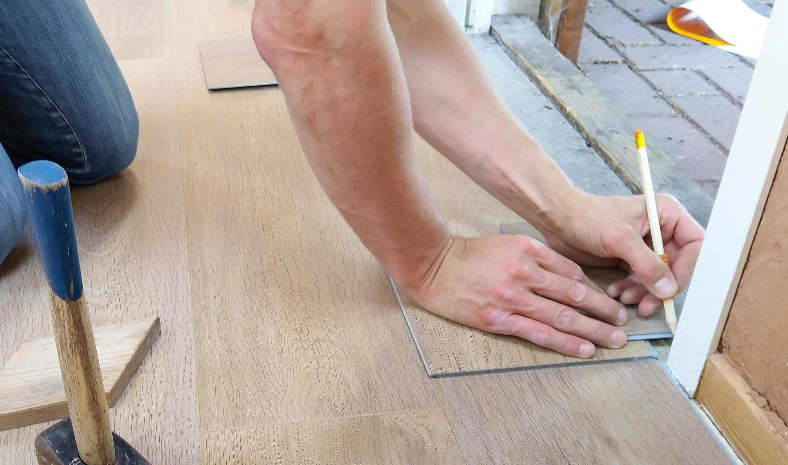
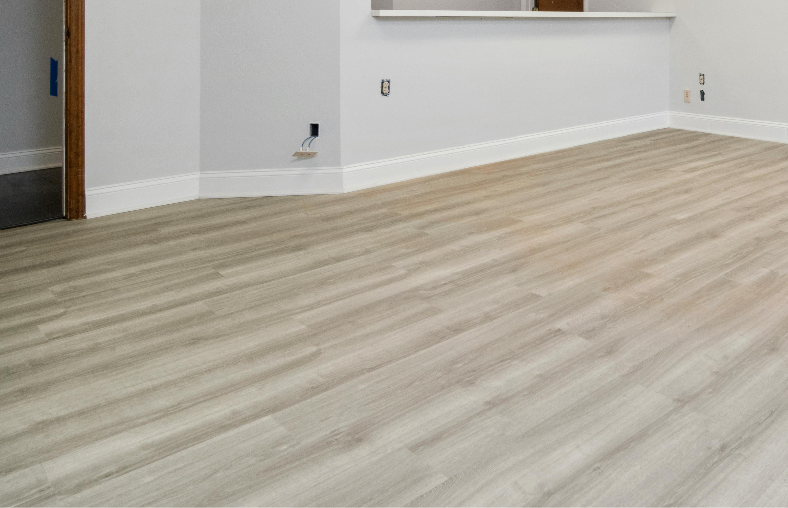
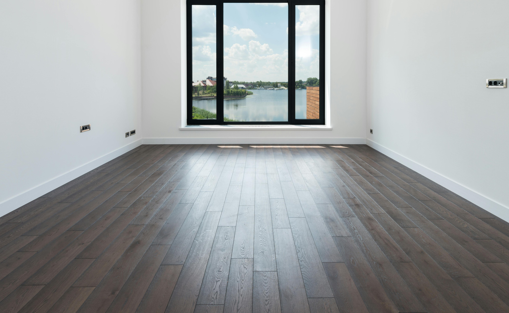

Bodenverlegung
Laminat-, Vinyl- und Parkettverlegung
Laminat-, Vinyl- & Parkettverlegung
Gleichmäßige, stabile Böden ohne Knarren oder sichtbare Fugen. Wir arbeiten streng nach Herstellervorgaben – mit korrekten Dehnungsfugen, passender Unterlage und sauberen Anschlüssen.
Türen, Wände und Übergänge werden präzise angepasst, damit der Boden nicht nur gut aussieht, sondern auch langlebig bleibt.
- Saubere Dehnungs- und Randfugen
- Passende Unterkonstruktion
- Exakte Übergänge zu Türen & Wänden

Vorbereitung des Untergrunds
Vor der Verlegung prüfen wir die Ebenheit und Feuchtigkeit des Untergrunds. Alte Bodenbeläge werden bei Bedarf entfernt und Unebenheiten lokal ausgeglichen.
Anschließend verlegen wir eine geeignete Unterlage für Schall- und Wärmedämmung sowie bei Bedarf eine Dampf- oder Feuchtigkeitssperre.
- Prüfung von Ebenheit & Restfeuchte
- Demontage alter Bodenbeläge
- Trittschall- & Wärmedämmung
Verlegung des Bodenbelags
Wir planen die Verlegerichtung und das Muster sorgfältig. Zuschnitte erfolgen präzise entlang der Wände, bei Rohrdurchführungen und Türöffnungen.
Parkett wird je nach System schwimmend (Klick) oder vollflächig verklebt – exakt nach technischer Spezifikation.
- Saubere Zuschnitte & exakte Übergänge
- Rohr- und Türanschlüsse
- Klick- oder Klebetechnik bei Parkett

Abschlüsse & Fertigstellung
Nach der Verlegung montieren wir Sockelleisten, Übergangsprofile und dekorative Abschlussleisten.
Türen werden bei Bedarf in der Höhe angepasst, der Boden geschützt und der Arbeitsbereich sauber hinterlassen.
- Sockelleisten & Übergangsprofile
- Anpassung von Türen
- Saubere Endreinigung

Was ist im Service enthalten
- Vorbereitung des Untergrunds und Demontage alter Beläge (nach Absprache)
- Unterlage inkl. Dampf- oder Feuchtigkeitssperre (bei Bedarf)
- Verlegung von Laminat, Vinyl oder Parkett
- Zuschnitte, Sockelleisten, Übergänge & Anschlüsse
- Reinigung der Arbeitszone nach Abschluss
Zusätzliche Leistungen
- Spezielle Schall- oder Wärmedämmung je nach Bodenart
- Abdichtung in Feuchtbereichen (Küche, Flur, Bad*)
- Sockelleisten mit verdeckten Kabelkanälen